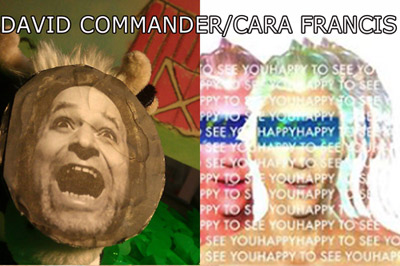

| 
David Commander's Modern Toy Theater & Cara Francis' Happy To See You
January 7 @ 8:00PM
David Commander's Modern Toy Theater
ESSEX
In this modern toy theater piece, I intend to draw a parallel between the 1819 sinking of the whaling-ship ESSEX by a sperm whale, and the dangerous backlash of overtaxing the Earth’s resources. Like the crew of the Essex, we are engaged in a chase that leads to our own demise. We have already begun to feel the initial repercussions of our own insatiable appetite. Changing weather patterns, drought, famine and pollution whisper a promise to make us castaways set adrift in the only vessel we have.
Cara Francis
HAPPY TO SEE YOU
Hi, I'm Happy To See You. You may be selected to dialogue with me, a friendly virtual assistant, about the complex relationships humans develop with online spaces and the artificial intelligence systems we engage with every day. If selected, you will be truly seen by your friends, your peers, some strangers and a complicated series of algorithms collecting your data directly from your mind’s eye. I love you and I don’t know you but I feel like I’m inside your house two years ago making friends with your cat in that video you posted and laughing and laughing at how great you are.
|